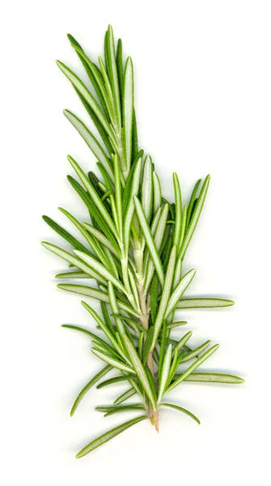
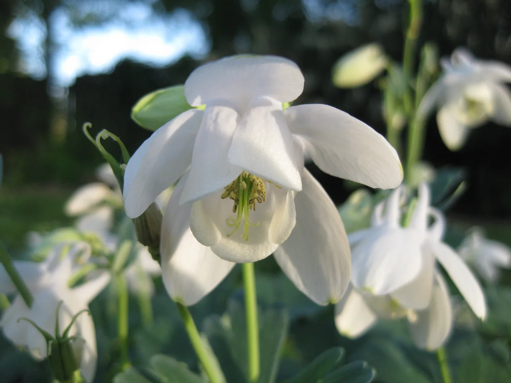

Blog · June 5, 2010
Grilling over Rosemary Wood
I was jogging the other day and ran by a rosemary bush a meter tall thrown out with trash.


Side note related to life and the outdoors, I have been taking photos of a specific garden since early April. It is turning into somewhat of a masterpiece of photographic flow series. First every two weeks and now it seems every couple of days new greenery bursts into vibrant bloom. From barely broken winter ground to a four foot tall mesh of life. Changing bright and soft colors and hues and depth of green. Green into POW! white, yellow, purple, burgundy.
What does life do to an area of Earth that it inhabits? A hydrologic system (of organisms) mediates a bit of air and soil [look into that statement]. It changes the chemical composition of its environment, making complex molecules and a variety of by-products that themselves fuel an evolving, increasingly complex biosphere.
Periodic cycles of ebb and flow in energy availability drive a dynamic system to “produce” (that is, exist). The structure of the affecting cycles effects the overall ecology, which itself incorporates the functions which affect its description. I find this intriguing. I think about this subject in many ways, striving for pure curiosity and inquisitiveness.
Along the way I end up with systems affecting (or as an effect of – or both -) my thought process. Such is the case in my deciding to document the growth of a garden. Here, it is so that I can look back and see, differently. It’s a pseudo-experiment that tests the hypothesis that the end product will inspire something new. Which could be just some photos. Conversely, it might aid thoughts about evolving ecological systems.
As great books inspire ideas, thoughtful intrigue can incite literature recollections and research collaborations that happen to arise alongside the stimulus. The stimulus of instantaneously re-seeing a garden grow from bare to bearing. It falls under a nameless category of curiosity to which I ascribe the sentiment of “Hm, that’s interesting”. I nurture many off-the-wall undertakings with this principle. Now then, you have wasted minutes reading my eccentric labors and musings. Go along and pursue your passion, no matter the obscurity. Remember that gravity was considered ridiculous when Galileo first thought of it.
Here is one photograph I have taken along the way. Sharing enthusiasm for life’s subtle details. -Amy


Aquilegia (also called Columbine) blooms in mid-April 2010
First published on my old blog, amyrobinson.wordpress.com, June 5, 2010.